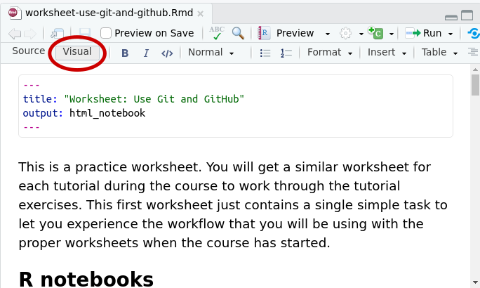

usethis::create_github_token()Use Git and GitHub
In this course we will collaborate via Git and GitHub. This means that if you have not used these tools before, then you will have to learn some new concepts and get used to a particular workflow. The investment of your time will more than pay off. Developing your research code with Git and GitHub has great advantages, and it’ll be great if this course gets you hooked on these tools. The use we make of Git and GitHub in this course is relatively simple, so it may be the perfect gateway drug.
We’ll start by first introducing some of the ideas theoretically, but then we will also show what the workflow looks like in practice. We will only scratch the surface, if you want to go deeper then Happy Git and GitHub for the useR is a useful resource.
Theory
Git
Git is a distributed version control system. So we will start by explaining the “version control” and the “distributed”. We’ll typeset typical Git terminology in bold.
Version control means that while you are working on your code or data files you can keep track of all the changes you are making. You can then later review the history of changes and, if necessary, revert to earlier versions. You may say that any cloud storage service like Google Drive or Dropbox does that as well, but there are important differences that we will now discuss.
Git keeps the repository with all your changes on your local computer. The version control does not rely on an internet connection.
You explicitly say when you want a batch of changes to be stored in the repository. Saving changes to the files in your local file area does not yet modify the repository. You have to make a so-called commit to commit the changes you want to the repository.
Typically you will add a commit message that summarises briefly what the changes are about. This makes it much easier to understand the development of your code later on.
So Git provides you a full control of creating points at which you want to save your code and documents to your repository. The commit messages you add can be very detailed or short. Their goal is for you and your collaborators to know what has been changed between different commit steps.
Distributed means that the repository typically does not reside only on a single computer. There can be clones of the repository on many other computers. For example, you might want your collaborators to have a copy of the repository for a common project that you are working on jointly. They can make commits to their clone of the repository in the same way you can make commits to yours.
Even if you only intend to work on your code alone, you may want to have copies of it on all the computers you occasionally work at and you will then want to be able to commit changes from any of those computers and pick up those changes from any other computer. So below when we speak of your “collaborator”, that collaborator could be yourself on another computer.
From time to time you will want to merge the changes from one clone to another to have a new common version that incorporates changes by all collaborators. For that there needs to be some communication via the internet, facilitated by a Git server.
GitHub
GitHub is a service that hosts a clone of your repository on your account and runs a Git server, so that you and your collaborators do not have to run your own Git servers. Instead you can push any commits that you made into your local Git repository to the GitHub clone and then your collaborators can pull those changes to their clone.
So with Git and GitHub we have a very different workflow than what you get when you collaborate using for example a Google Drive folder. There are more steps before your collaborator sees your changes, namely:
- you save your code changes on your computer to the directory that is associated with the git repository,
- you select or stage which of your changed code files you want to commit to your local repository,
- you commit those selected changes to your repository with a commit message,
- you push your commits to your online GitHub repository,
- your collaborators pull your commits from GitHub,
- these commits automatically get merged into their clone,
- the changed files are checked out from their clone into the corresponding directory on their local computer drive.
There are circumstances where the standard workflow fails. If you attempt to pull commits from GitHub that change files that you have also modified locally but not yet committed, then the pull will fail with an error message. If you and a collaborator independently made commits to your respective clones that touched the same lines of code then there may be merge conflicts that need to be resolved. If something like this happens to you then congratulations: you have arrived in more advanced Git territory than we will discuss in this tutorial. If at some point during the course something like this happens to you, let us know by posting a comment and we or some git-savy participant will give advice.
This more involved workflow takes a bit of getting used to, but is definitely the best way to work on code and data. If you follow the guidelines about committing your code changes regularly you will easily go back to earlier versions of your code if you need to, work with multiple people on the same code development, return to old coding projects that need reviewing, and be a part of open and reproducible science. So next you will get to try this out in practice.
Practice
For each week of this course you will get a Git repository with worksheets for you to complete. This repository will be set up for you on GitHub by GitHub classroom. You will clone that repository to your computer and then commit your work to that repository and push it back to GitHub. This gives the course leaders a chance to see your work and to comment on it. These repositories will be private repositories, visible only to you and the course leaders Asta and Gustav and to Romain who provides technological support for the course. Below you will get a preparatory repository (also private) on which you can practice the workflow.
If you do not yet have an account on GitHub, please go there now and sign up. If you do have an account, please also go there and sign in.
Connect RStudio to GitHub
We will be interacting with Git and GitHub via RStudio. This just requires some initial setup but will be very convenient from then on. Of course, if you are already using GitHub from within RStudio, then you can skip the steps below that you have gone through on your computer in the past.
RStudio needs a personal access token for accessing GitHub. The following command will bring you to the GitHub webpage that creates that personal access token:
You can edit the Note to something like “mizer course” or whatever will remind you later what this was for. You can leave the rest of the form as it is and scroll down to the bottom and press the “Generate token” button. That will lead you to a page that displays your new token:
Leave this page open for now and return to RStudio and issue the command
gitcreds::gitcreds_set()This will prompt you to enter your token. Go back to the webpage with your token and copy the token to your clipboard. Go back to RStudio and paste in that token and press Enter. That completes the setup. You will not have to do this again on this computer, but if you switch to a new computer, you will repeat the above. It is a good idea to save this token somewhere safe, in case you get prompted to enter it again.
If you run into difficulties with the above, please post about it in the comments section at the bottom of this page. If you want to dig in deeper yourself, you can take a look at the troubleshooting section in “Happy Git and GitHub for the useR”. But even if you manage to solve some problem yourself, please let us know about it in the comments.
Create repository
To create your practice repository, please follow the following link:
https://classroom.github.com/a/Fc-YtAIb
Once you are logged into GitHub, this should bring you to a screen asking you to accept an assignment.
Please click on “Accept the assignment”. This will first tell you that your repository is being prepared and that you should refresh the page in your browser.

When you hit the refresh button on your browser after just a short moment, you should see a page with a URL for your new repository on GitHub.
Please follow that URL to your repository’s home page. This page displays the README at the bottom. There you for example find a points bar where you accumulate points as you complete the exercises in the worksheet. We are now interested in the big green “Code” button which, when clicked, will give a popup with the URL for cloning your repository.
Clone repository
Now we can use RStudio to clone this repository to your computer. For this you create a new RStudio project by clicking on the project drop-down menu at the top-right of the RStudio window and selecting “New Project…”.

That will open a dialog where you first choose “Version Control” and then choose “Git”.
In the resulting dialog window you paste in the repository URL that you copied from GitHub. You also specify the directory in your file area where you want the project directory to be saved. To do that click the “Browse…” button and find a location that is convenient for you. You may want to create a dedicated directory for this mizer course and then select that. But avoid creating a directory path that is too long. We have seen problems arise for people who used pathnames longer than 100 characters.
Then click “Create Project”. RStudio now communicates with GitHub to download a clone of the repository and it also checks out all the files contained in the repository to the newly created directory. You can see them in the “Files” tab in RStudio.
Continue in worksheet
In the Files tab you will in particular see a file called “worksheet-use-git-and-github.Rmd”. That is the worksheet for this tutorial. Please click on the file name in the Files tab of RStudio to open this worksheet in the RStudio editor. The editor has a “Source” mode and a “Visual” mode. Try out both and see which one you prefer.

Now just follow the instructions in that worksheet. This will guide you through the process of performing your first commits to your repository and pushes to GitHub.
As you work through the exercises, you will get some automatic feedback. You can also always ask for personal feedback from us. The details are described in the worksheet. But if you run into a problem that you think might be of interest to others as well, please post in the comments below.